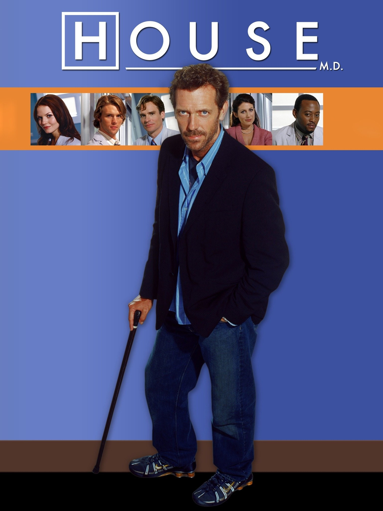

Who am I?
I am a TV show avid watcher, and I love to watch House MD. It is a show about a doctor who is a genius and a jerk.
House MD
House MD Summary (Spoilers)
House M.D. (2004–2012) is a medical drama about Dr. Gregory House, a brilliant but misanthropic diagnostician at Princeton-Plainsboro Teaching Hospital, known for solving rare and complex medical cases through unconventional thinking and rule-breaking.
Haunted by chronic leg pain and addicted to Vicodin, House’s abrasive personality alienates patients and colleagues, though he is begrudgingly respected for his genius.
He is supported and challenged by hospital administrator Dr. Lisa Cuddy, his only true friend Dr. James Wilson, and rotating teams of fellows such as Cameron, Chase, Foreman, Thirteen, Taub, and Kutner, each bringing conflict and perspective.
The show blends “case of the week” mysteries with ongoing arcs exploring House’s addiction, ethics, relationships, and attempts at redemption.
Across eight seasons, House evolves from an untouchable genius into a man forced to face his flaws, with the series concluding in a bittersweet finale where he fakes his death to spend the final months alongside Wilson, who is dying of cancer.